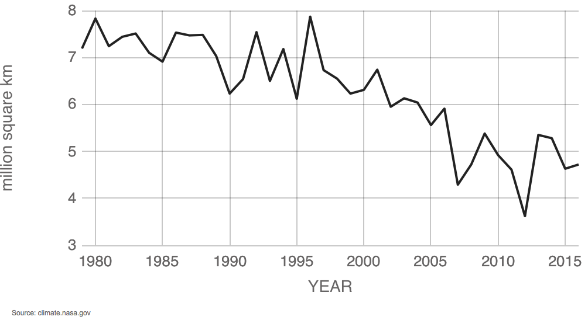

Average September extent 1979-2016
Arctic sea ice reaches its minimum each September. September Arctic sea ice is now declining at a rate of 13.3 percent per decade, relative to the 1981 to 2010 average. The graph above shows the average monthly Arctic sea ice extent in September since 1979, derived from satellite observations. The 2012 extent is the lowest in the satellite record.